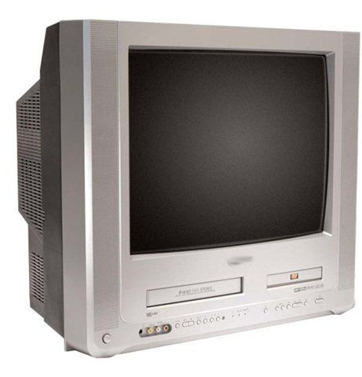
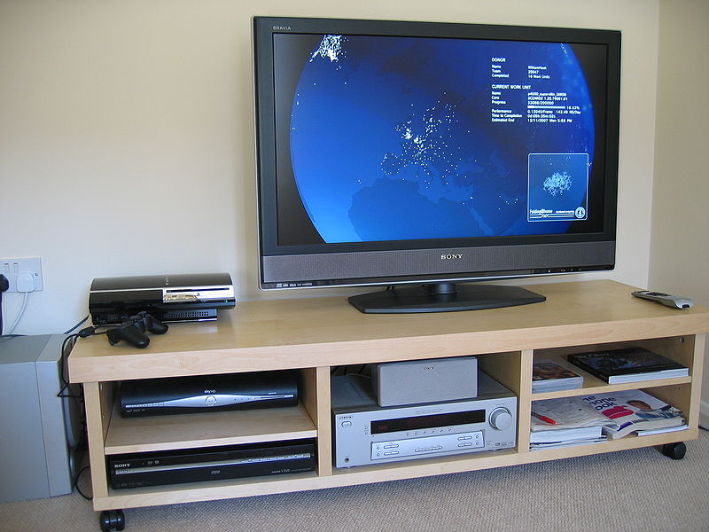
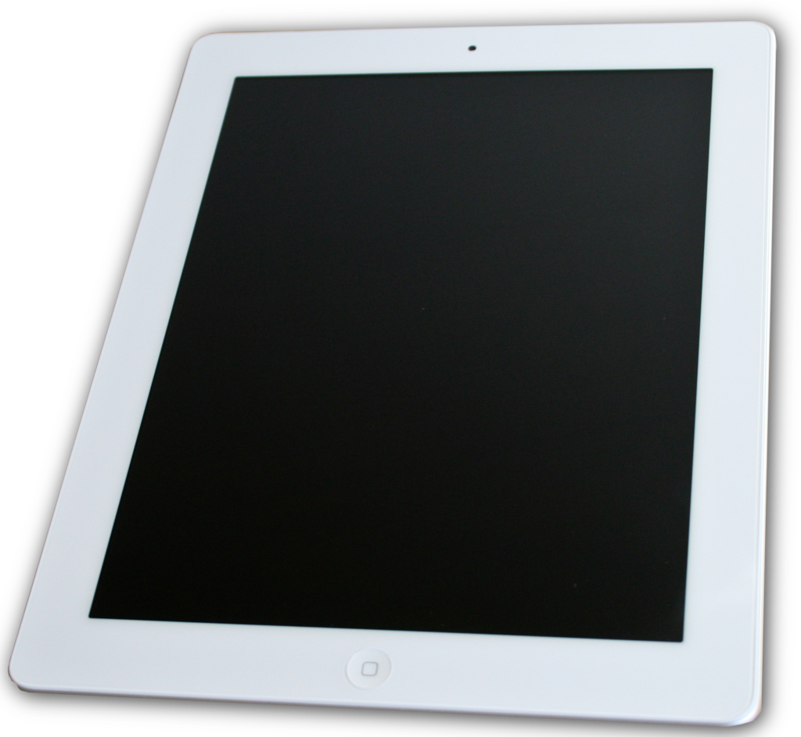
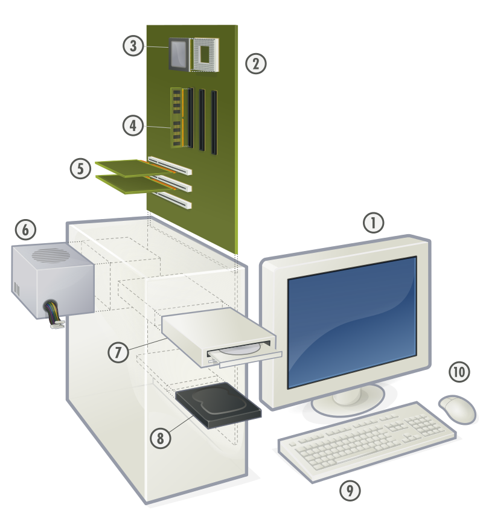
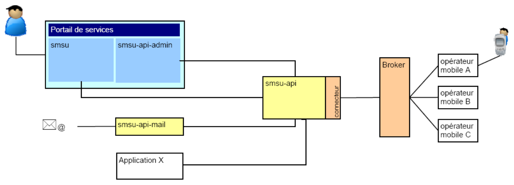
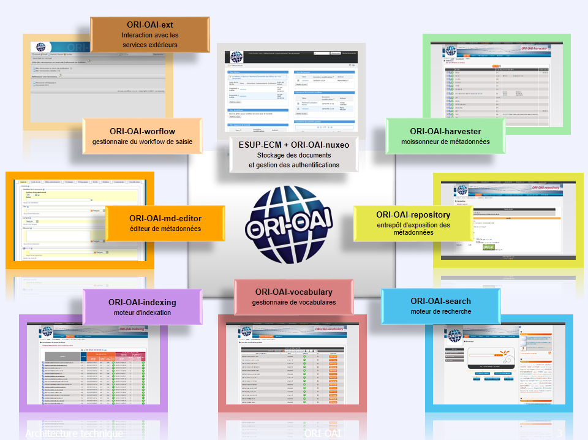
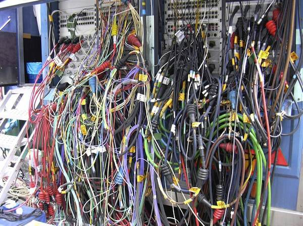

~ Architecture Web où l'implémentation d'un service est proposée par une application indépendante / autonome reliée à d'autres applications web par services web via des API REST.
Comme toujours avec les nouveaux noms IT très tendances (web 2.0, ajax, portail, agile, ...) , c'est pas vraiment nouveau ... à part le nom :-)
Reprend +/- le concept de linux/unix à la KISS (Keep it simple, stupid) ... sauf qu'on n'a toujours pas vraiment le pipe!
~ À mettre en concurrence avec une architecture dite monolithique ... ?
Quesaco ?
Analogie ...
L'installation TV ...


Quesaco ?
Analogie ...
... plus récemment


Contexte d'usage
microservices vs monolithique ?
les éternels débats ...
client léger (mainframe) vs PC
micronoyau vs noyau monolithique
cloud storage vs data center
microservices vs application monolithique ...
Contexte d'usage
microservices vs monolithique ?
Une appli par service ...
annuaire / identification
authentification
gestion des cours
gestion RH
gestion étudiante
emploi du temps
gestion de projets
gestion des mails
etc.
Microservices
Avantages
Applications plus petites
Applications indépendantes
Souplesse dans les branchements
Meilleure visibilité des fonctions
Tente à standardiser les services / connecteurs
Réutilsiation des services
...
Microservices
Inconvénients
Applications à interconnecter
Problèmes techniques multiples :
compatibilité des versions
pb transactions inter applications
tests d'intégration complexes
branchements : qui branche, comment, quel branchement, ... ?
résolutions de pannes / bugs : responsabilités ?
Duplication de codes, de paramétrages, de tests, ...
Code au total plus conséquent
Installation et maintenance plus complexe
ESUP et les microservices
c'est pas si nouveau ... :-)
CAS, LDAP, Shibboleth ... sql
devenu omniprésent
standardise le 'branchement' (protocole LDAP, protocole SAML)
ENT ESUP = présentation ... de micro-services (portlet)
-> des projets qui apportent des services spécifiques (micro) :
Gestion du stockage
Affichage de notes
SMS
Paiement en ligne
etc.
... en fait souvent, on développe 'seulement' les branchements ou connexions ou glue entre les services, et pas vraiment le service en lui-même.
ESUP et les microservices
jusqu'au niveau technique ...

Architecture SMSU

Architecture ORI-OAI
ESUP et les microservices
Attention danger
Attention à ne pas tomber dans les nanoservices, et dans le cadre d'un projet libre mutualisé, à ne pas déporter la complexité du branchement chez l'exploitant.

Cablage ...
Conclusion
... conclusion
Pas de solution, d'architecture miracle
Le curseur est à positionner en toute connaissance de cause
On faisait du microservice ... sans en connaitre le nom
On peut démarrer en micro-service et revenir au monolithique ... et inversement
Nouveau cas d'usage
EsupNfcTag : de l'encodage de cartes à un SGC libre ?
On parle microservices, notamment pour EsupNfcTag car :
Solution très technique et spécialisée
Fait intervenir des périphériques multiples
Requiert de la souplesse
Listing des applications possibles encore à imaginer
Mais on doit aussi proposer quelque chose qui ressemble à du monolithique :
Pour des raisons de maintenance
Pour que ce soit installable et paramétrable "out of the box"